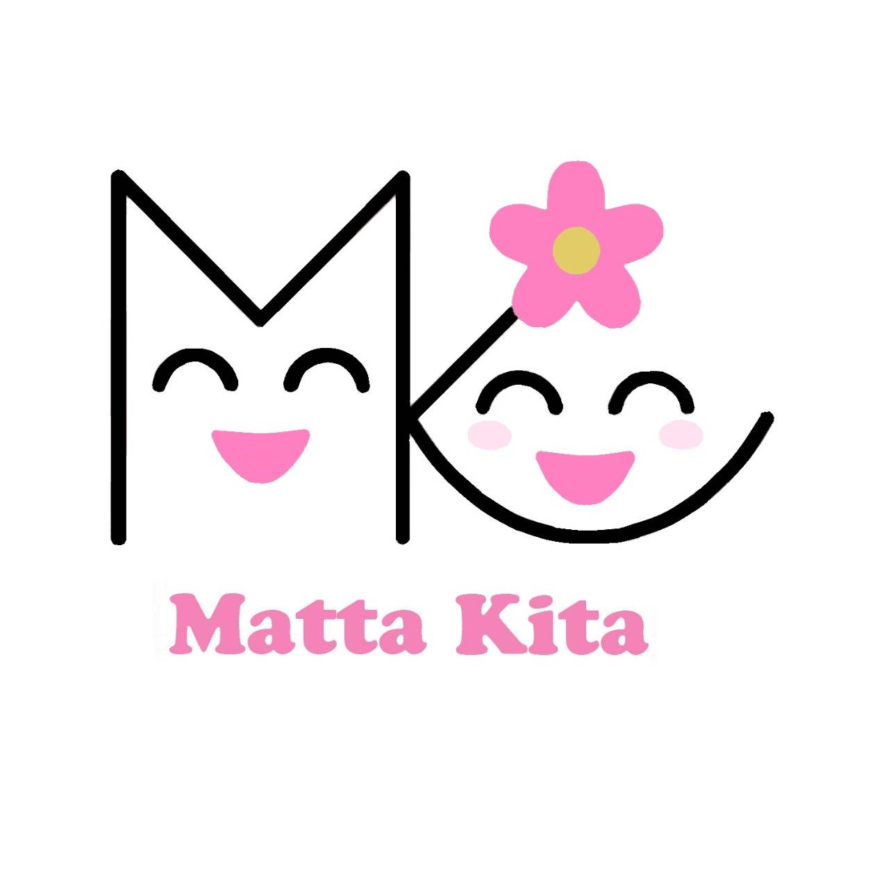

今年度から、町会の会員証を一から作り直しました。紙の会員証とデジタル会員証、両方を合わせて整備した記録です。
これまで会員証がなかったので、まずデザインから考えました。町会のロゴを中心に、青・紫・緑のグラデーションを使った爽やかなデザインに決定。表面には氏名・町会名を記入する欄、裏面には行事参加スタンプ欄と、デジタル会員証の申し込み用QRコードを入れました。

若い世帯を中心に、スマホで使えるデジタル版も作りました。世帯ごとに専用のURLを発行して、LINEなどで送るだけで使えます。アプリのインストールは不要で、ホーム画面に追加すればアイコンが表示されます。
主な機能はこの３つです。
紙とデジタルを組み合わせることで、どんな世代の方にも対応できる会員証の仕組みが整いました。今後は実際に使いながら改善を重ねていきたいと思います。